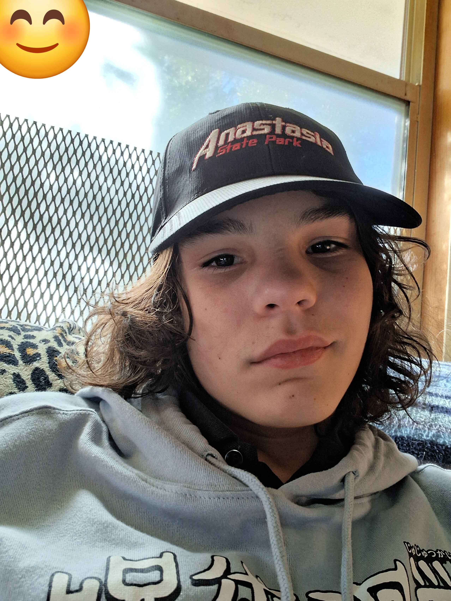
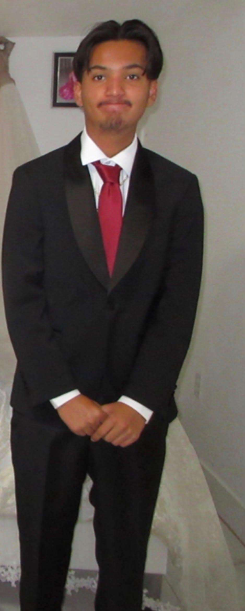

About La La Cream
La La Cream is a modern skincare and bodycare brand focused on creativity, confidence, and making self-care more enjoyable.
Our Story
La La Cream was created by Brandon Brodeur, Elijah Suarez, and Jhovani Aviles-Espinoza. We wanted to create a skincare brand that felt different from the typical companies while still having a clean and professional style.
Our products combine your everyday skincare with creative ideas to give customers something interesting to explore.
Our Mission
Our mission is to create creative skincare and bodycare products that make self-care simple, enjoyable, and accessible.
Meet the Founders
Elijah Suarez
Co-Founder
Focuses on the creative, content, and visual design side of La La Cream.

Brandon Brodeur
Co-Founder
Focuses on developing the website and making sure the different parts of the site work properly.

Jhovani
Co-Founder
Focuses on project management, organization, and testing the website in order to make sure everything works as expected.
Our Values
- Creativity — We believe skincare should be personal, enjoyable, and a little different compared to other brands.
- Confidence — We want our products and brand to encourage people to feel comfortable and confident.
- Quality — We focus on creating both thoughtful products and a consistent experience.
- Customer Experience — We want La La Cream to be simple, welcoming, and easy to navigate.
Our Vision
We want La La Cream to be known for its creative products, a unique brand style, and also its approach to self-care.